23 Polishing Charts for Audit Reports
In Chapter 22 we learnt to build charts with ggplot2. We mapped columns to aesthetics, and drew bars, histograms, lines and box plots. Those charts were good enough to find things. A heat-map showed the March rush in Fatehpur and Rampur. Reference lines showed large bills paid within a day, and districts that spent more than their budget.
But a chart that finds a problem is not yet a chart fit for an audit report. Its axes may show full rupees instead of lakh. Its colours may be the defaults, with nothing picked out. It may have no title, no source and no reference against which the reader can judge. A reader of the report should see the point in a few seconds.
This chapter adds the finishing layers. Step by step, we will learn
- how to control axes, colours and coordinate systems, through scales and coords;
- how to split a chart into small panels, called facets;
- how to add titles, labels and notes, and how to change the overall look with themes;
- how to save charts for the audit report.
On the way, we examine a planted case that Chapter 22 only hinted at, bills split just below the limit of ₹2 lakh. At the end, two audit use cases put it all together.
We use the same bill register as in Section 22.2. The code below creates it again, exactly as before, so every number matches. A second folded chunk rebuilds the small tables made in Chapter 22, such as monthly_total and budget_vs_exp. It also sets theme_bw() as the default look, as we did there.
Code to create the bill register, the monthly expenditure and the budget
set.seed(2025)
district_list <- tibble(
district = c("Amarpur", "Belapur", "Chandpur", "Devgarh", "Fatehpur", "Gopalganj",
"Haripur", "Kishanpur", "Lalganj", "Madhopur", "Narsinghpur", "Rampur"),
division = rep(c("North", "South", "East", "West"), each = 3),
size = round(runif(12, 0.6, 1.5), 2) # bigger districts have more bills
)
fy_months <- seq(as.Date("2024-04-01"), by = "month", length.out = 12)
categories <- tibble(
category = c("Works", "Supplies", "Services", "Vehicle hire"),
lambda = c(3, 4, 3, 2), # bills per month in a district
median = c(300000, 110000, 70000, 35000) # typical bill amount
)
vendors <- list(
"Works" = c("Narmada Builders", "Shakti Constructions", "Jai Hind Infra",
"Pawan Contractors"),
"Supplies" = c("Bharat Stationers", "Kaveri Suppliers", "Om Sai Traders",
"Patel Hardware"),
"Services" = c("National Printers", "Rajdhani Computers", "Sagar Caterers"),
"Vehicle hire" = c("Shree Ganesh Transport", "Annapurna Travels")
)
# Number of bills for each district, month and category
cells <- expand_grid(district_list, month_start = fy_months, categories) |>
# Planted case 1. March rush in Fatehpur and Rampur
mutate(rush = district %in% c("Fatehpur", "Rampur") &
month_start == as.Date("2025-03-01"),
lambda = if_else(division == "West" & category == "Vehicle hire", 0, lambda),
n = rpois(n(), lambda * size * if_else(rush, 2, 1)))
bills <- cells |>
uncount(n) |>
mutate(
bill_date = month_start + sample(0:27, n(), replace = TRUE),
amount = round(rlnorm(n(), log(median), 0.55) * if_else(rush, 2.5, 1), -1),
vendor = map_chr(category, \(k) sample(vendors[[k]], 1)),
days_to_pay = 3 + rnbinom(n(), mu = 15, size = 3)
)
# Planted case 2. Supplies split into bills just below Rs 2 lakh in Devgarh
split_bills <- tibble(
district = "Devgarh", division = "South", category = "Supplies",
vendor = "Shubham Enterprises",
bill_date = as.Date("2024-06-03") + sort(sample(0:270, 28)),
amount = round(runif(28, 190000, 199900), -1),
days_to_pay = 3 + rnbinom(28, mu = 15, size = 3)
)
# Planted case 3. Large works bills paid within a day in Lalganj
fast_bills <- tibble(
district = "Lalganj", division = "East", category = "Works",
vendor = "Vikas Constructions",
bill_date = as.Date("2024-08-05") + sort(sample(0:200, 6)),
amount = round(runif(6, 650000, 900000), -1),
days_to_pay = c(0, 1, 0, 1, 1, 0)
)
bills <- bind_rows(bills, split_bills, fast_bills) |>
mutate(month_start = floor_date(bill_date, "month"),
month = factor(format(month_start, "%b"), levels = format(fy_months, "%b")),
quarter = (as.integer(month) - 1) %/% 3 + 1) |>
arrange(bill_date) |>
mutate(bill_no = sprintf("B-%04d", row_number())) |>
select(bill_no, district, division, category, vendor, bill_date, month_start,
month, quarter, amount, days_to_pay)
# Monthly expenditure statement, built from the bills
spend <- bills |>
summarise(vouchers = n(), exp = sum(amount),
.by = c(district, division, month_start, month, category)) |>
arrange(district, month, category)
# Budget estimate of each district for the year
budget <- spend |>
summarise(amt_exp = sum(exp), .by = district) |>
mutate(util = runif(12, 0.6, 0.98),
# Planted case 4. Devgarh and Lalganj spent more than their budget
util = replace(util, district %in% c("Devgarh", "Lalganj"), c(1.18, 1.27)),
amt_be = round(amt_exp / util, -5)) |>
select(district, amt_be)
# Small helpers for amounts in prose
lakh <- function(x) round(x / 1e5, 1)
crore <- function(x) round(x / 1e7, 2)Code to rebuild the tables made in the previous chapter
theme_set(theme_bw())
# Total expenditure of each month, in crore
monthly_total <- spend |>
summarise(exp_crore = sum(exp) / 1e7, .by = month_start)
# Average bill amount of each district
district_avg <- bills |>
summarise(mean_amount = mean(amount),
.by = district)
# Budget and expenditure of each district
budget_vs_exp <- spend |>
summarise(amt_exp = sum(exp), .by = district) |>
left_join(budget, by = "district")
# Districts that spent more than their budget
over <- budget_vs_exp |> filter(amt_exp > amt_be)23.1 Modifying scales
Scales control how data values become what we see. They turn amounts into positions on an axis, categories into colours, and values into sizes. Through scales, we can change the axes, the colours, the sizes and the shapes of a chart.
So far, we have used the default scales. Our needs for changing them fall into three broad groups, which we will learn in this section.
- Changing the scales of position, that is, the axes.
- Changing the scales of colour and fill.
- Changing the scales of other aesthetics.
23.1.1 Modifying scales mapped to position aesthetics, that is, transforming axes
The default coordinate system of ggplot2 is Cartesian, with the two position aesthetics x and y. In Figure 22.3 we gave both of them ourselves. In the bar chart in Figure 22.20 we gave only x, and ggplot2 made y itself (remember after_stat(count)).
To change the position scales, we have the group of functions scale_*_#(). Here * is the position aesthetic, usually x or y, and # is the type of the variable. For example, these two functions are for continuous axes.
scale_x_continuous(name, breaks, labels, limits, transform)
scale_y_continuous(name, breaks, labels, limits, transform)Through these arguments, we can change the title of the axis (name), the positions of the tick marks (breaks), the text at the ticks (labels), the range of the axis (limits) and any transformation (transform). In Figure 23.1, we have given the axes new titles and limits with the scale functions. The second chart looks only at bills from ₹1.5 lakh to ₹2.5 lakh. The points between 190000 and 200000 already look more crowded than those just above 200000.
# Basic scatter plot
ggplot(bills, aes(x = amount, y = days_to_pay)) +
geom_point()
# Modifying scales, both axis titles and axis limits
ggplot(bills, aes(x = amount, y = days_to_pay)) +
geom_point() +
scale_x_continuous(name = "Bill amount (₹)", limits = c(150000, 250000)) +
scale_y_continuous(name = "Days taken to pay", limits = c(0, 60))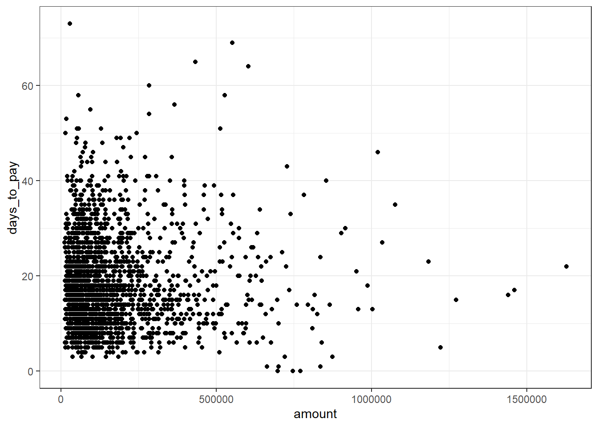
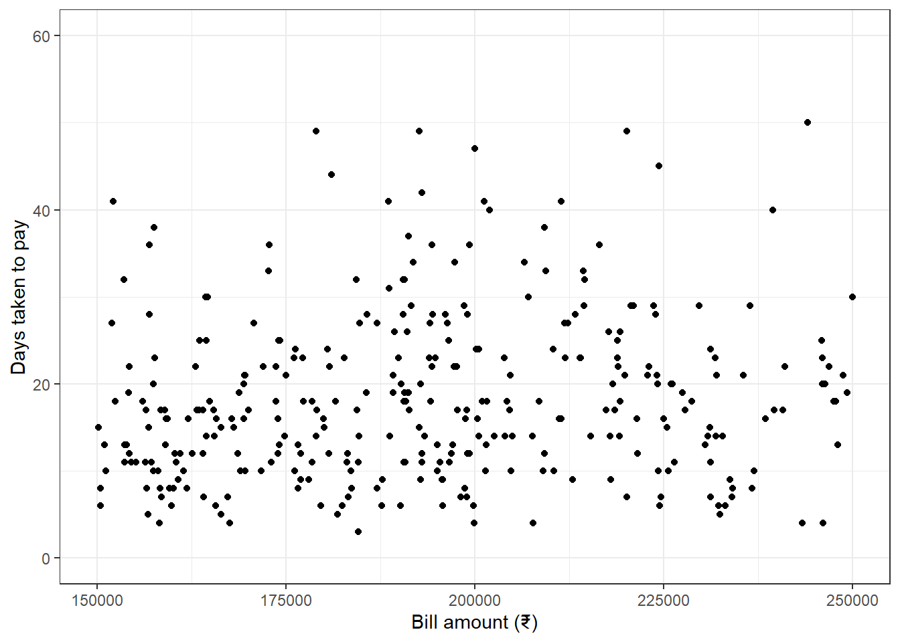
We can also transform an axis with the argument transform (Figure 23.2). Before ggplot2 version 3.5, this argument was called trans, a name you will still see in older code. Bill amounts are skewed. Many bills are small and a few are very large. A logarithmic scale spreads out the small bills and pulls in the large ones. Here we transform only the x axis.
ggplot(bills, aes(x = amount, y = days_to_pay)) +
geom_point(alpha = 0.3) +
scale_x_continuous(transform = "log10")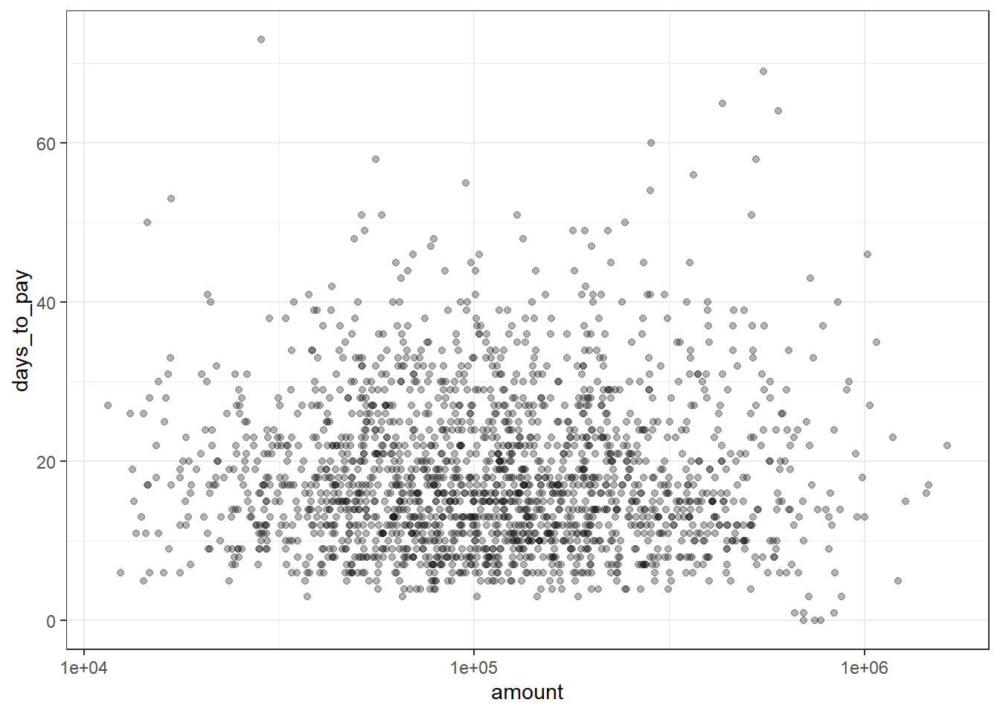
The transformation is done by a transformer. It describes the transformation, its inverse, and how to draw the labels. A few transformations are listed in Table 23.1.
| Name | Equivalent function \(f(x)\) |
|---|---|
"asn" |
\(2\sin^{-1}(\sqrt{x})\) |
"atanh" |
\(\tanh^{-1}(x)\) |
"exp" |
\(e ^ x\) |
"identity" |
\(x\) |
"log" |
\(\log(x)\) |
"log10" |
\(\log_{10}(x)\) |
"log2" |
\(\log_2(x)\) |
"logit" |
\(\log(\frac{x}{1 - x})\) |
"probit" |
\(\Phi^{-1}(x)\) |
"reciprocal" |
\(x^{-1}\) |
"reverse" |
\(-x\) |
"sqrt" |
\(x^{1/2}\) |
There are also scale functions made for common transformations. Some of these are listed below. Each has a y version too.
Of these, scale_x_reverse() and its y version are often useful.
So far, the scales dealt with numbers. There are scale functions for other kinds of data too, such as these.
Let us use a date scale on the monthly total of the scheme (Figure 23.3). We also show the amounts in crore, with a function from the package scales. We will learn more about it shortly.
ggplot(monthly_total, aes(month_start, exp_crore)) +
geom_line() +
scale_x_date(name = "Month",
date_breaks = "2 months",
date_labels = "%b %y",
limits = c(ymd("20240401"), ymd("20250331"))) +
scale_y_continuous(name = "Expenditure",
labels = scales::label_number(prefix = "₹", suffix = " crore"))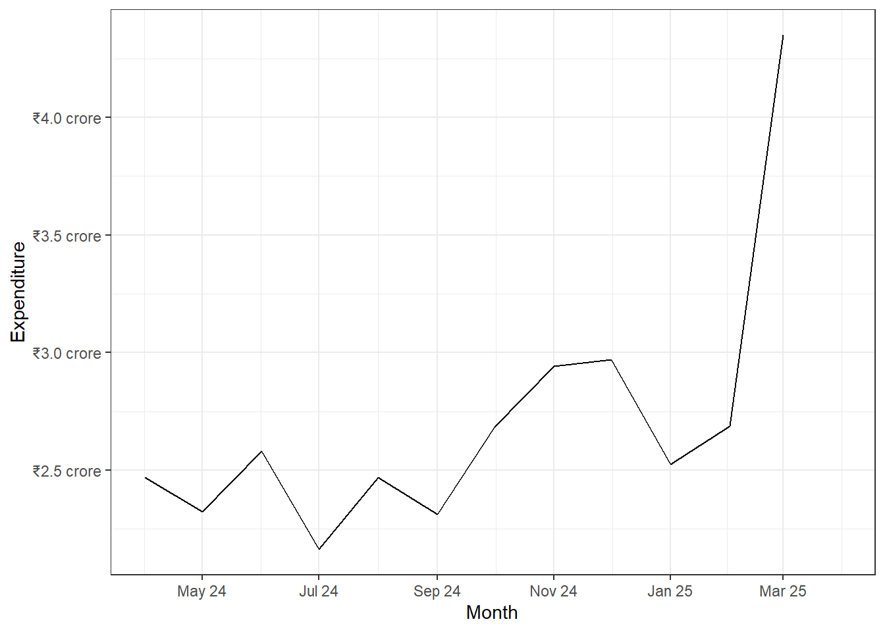
In Figure 23.3 we have changed six things, all with scale functions.
- The title of the
xaxis. - The
breaks, that is, where the ticks are placed. - The labels, to show the month and two digits of the year.
- The range of the data shown, with
limits. - The title of the
yaxis. - The labels of the
yaxis, to show amounts in crore.
The package scales gives many functions to format the labels of an axis. In Figure 23.4 each point is a district. The x axis shows the total expenditure of the year, with commas, through label_comma(). The y axis shows the share of March in that expenditure, as a percentage, through label_percent().
spend |>
summarise(total = sum(exp),
march_share = sum(exp[month == "Mar"]) / sum(exp),
.by = district) |>
ggplot(aes(total, march_share)) +
geom_point(size = 3, colour = "dodgerblue") +
scale_x_continuous(name = "Expenditure in the year (₹)",
labels = scales::label_comma()) +
scale_y_continuous(name = "Share of March in the year's expenditure",
labels = scales::label_percent())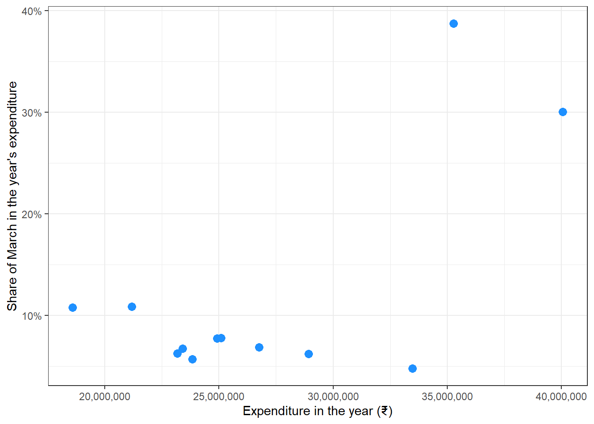
In an even year, each month would carry about 8% of the expenditure. In Figure 23.4 most districts are near that level. Two points stand far above the rest. These are Fatehpur, with 39% of its expenditure in March, and Rampur, with 30%.
label_comma() groups the digits in thousands, in the Western way. For example, an amount written as 3,50,00,000 in the Indian way is printed as 35,000,000. Indian readers may find this hard to read. For audit reports, it is usually better to show amounts in lakh or crore, with scales::label_number(scale = 1e-5, suffix = " lakh") or scales::label_number(scale = 1e-7, suffix = " crore"). The argument scale multiplies each value before it is printed.
Some other functions in scales that are useful for numeric axes are these.
-
scales::label_bytes()formats numbers as kilobytes, megabytes and so on. -
scales::label_dollar()formats numbers as currency.scales::label_currency(prefix = "₹")does the same with the rupee sign. -
scales::label_ordinal()formats numbers as ranks, such as 1st, 2nd and 3rd. -
scales::label_pvalue()formats numbers as p-values, such as <.05, <.01 and .34. -
scales::label_date()andscales::label_date_short()format dates. -
scales::label_wrap()wraps long text, such as long names of schemes, across several lines.
In Figure 23.3, though we set the limits of the dates, there is still some empty space on both sides of the axis. Similarly, in Figure 22.23 some readers may dislike the gap between the labels of the y axis and the start of the bars. To control this space on an axis, we use the argument expand of a scale_*_*() function, with the function expansion(). It has two arguments, mult and add.
-
multtakes two numbers, which expand the range on each side by that fraction of the range. -
addalso takes two numbers, but these add a fixed amount on each side.
Let us take Figure 22.23 again. Giving mult = c(0, 0.2) to expansion() adds no space on the left of the x axis. On the right it adds space equal to 0.2 times the range of the data. See Figure 23.5.
23.1.2 Adding secondary position axis
Sometimes we want to read the same values in two different units. A secondary axis shows a second scale on the other side of the chart. It must be a fixed transformation of the first scale.
A secondary axis can mislead. Readers may compare two lines or bars that are not really on the same scale. Use it only when the second axis is a fixed conversion of the first, as in the example below. Never use it to put two unrelated measures on one chart.
A secondary axis is added with the function sec_axis(), given to the argument sec.axis of a scale. Its first argument, transform, takes a formula in the ~ style, where . stands for the values of the main axis. It also takes name and the other usual arguments, like labels.
In Figure 23.6 the bars show the total expenditure of each month, in crore. The secondary axis on the right shows the same amount as a percentage of the total budget of the scheme. Here we use stat = "summary" with fun = sum, so that geom_bar() adds up the rows of each month.
total_be_crore <- sum(budget$amt_be) / 1e7
spend |>
ggplot(aes(month, exp / 1e7)) +
geom_bar(
stat = "summary",
fun = sum
) +
scale_y_continuous(name = "Expenditure (₹ crore)",
expand = expansion(mult = c(0, 0.1)),
sec.axis = sec_axis(~ . / total_be_crore * 100,
name = "Per cent of the annual budget")) +
scale_x_discrete(name = "Month")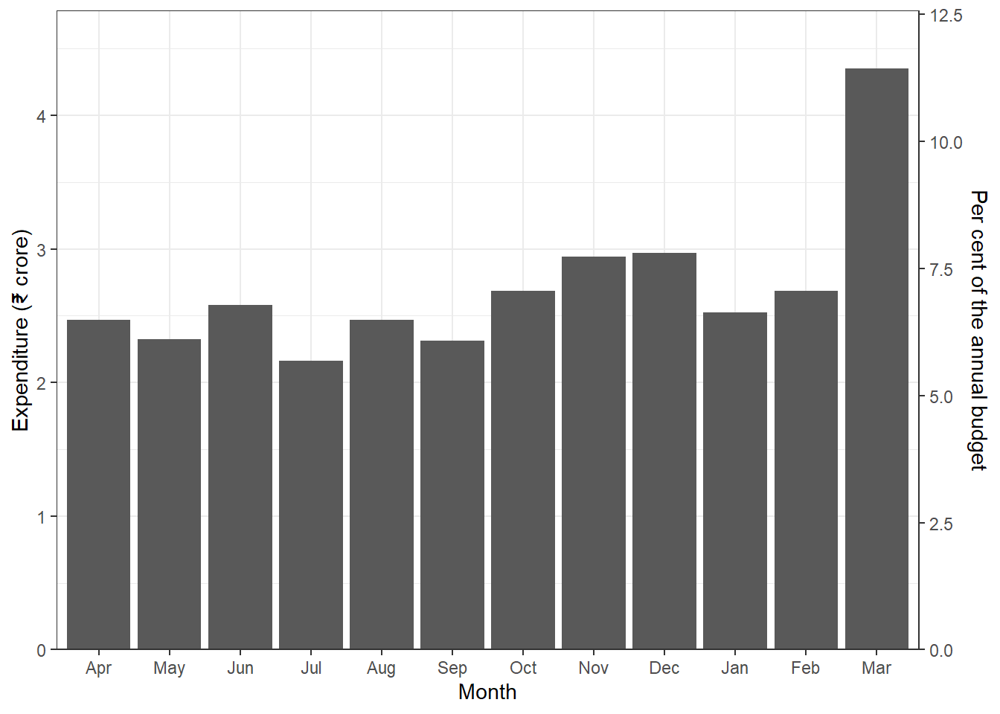
The total budget of the scheme is ₹38.04 crore. So the March bar, at ₹4.35 crore, is 11.4 per cent of the annual budget, as the right axis shows.
23.1.3 Customising colour (or fill) mappings
Readers may read Appendix D where colours are discussed in detail. We know that a continuous variable mapped to colour gives a gradient of colours, and a discrete variable gives separate colours.
For continuous variables, ggplot2 uses the function scale_fill_continuous(), which in turn uses scale_fill_gradient(). The default colours of scale_fill_gradient() are given in its arguments, shown below for its colour version. Every fill scale function has a matching colour scale function, for the colour aesthetic.
scale_colour_gradient(
name = waiver(),
...,
low = "#132B43",
high = "#56B1F7",
space = "Lab",
na.value = "grey50",
guide = "colourbar",
aesthetics = "colour"
)So we may change the colours at the two ends of the gradient. There are two more related scales.
-
scale_fill_gradient2()makes a three-colour gradient, with a chosenmidpoint. -
scale_fill_gradientn()makes a gradient of any number of colours.
scale_fill_gradient2() is very useful in audit, because we often have a natural middle value. Let us redraw the heat-map of Figure 22.11. This time, each box shows the share of the month in the district’s expenditure for the year. In an even year, each month would carry one-twelfth. So we set the midpoint to 1/12. Months above it turn red, and months below it turn green.
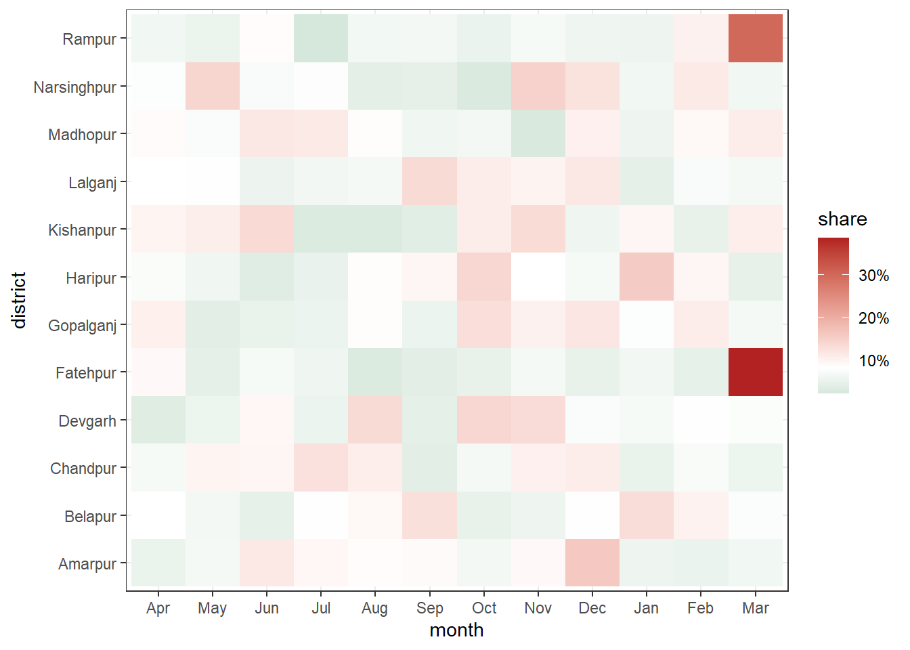
In Figure 23.7 March of Fatehpur and Rampur is now dark red, while the other months are pale. A well chosen midpoint makes the chart tell its story.
If the variable mapped to fill or colour is discrete, ggplot2 uses scale_fill_discrete(). By default, this takes its colours from scale_fill_hue().
For discrete colours, it is usually better to use the brewer palettes described in Appendix D. If we want to choose the colours ourselves, we use scale_fill_manual(). It takes the colours from a named vector, whose names are the categories in the data. See the example in Figure 23.8.
Notice the backticks around `Vehicle hire`. A name with a space must be written this way.
Another useful group of scales is scale_colour_identity() and scale_fill_identity(). These are used when the data already holds the colours themselves. Suppose the audit team has rated the risk of four districts, and has stored the colour of each rating in the data. See Figure 23.9.
ratings <- tibble(
district = c("Devgarh", "Fatehpur", "Lalganj", "Rampur"),
rating = c("High", "Medium", "High", "Medium"),
colour = c("firebrick", "orange", "firebrick", "orange")
)
ggplot(ratings, aes(district, rating)) +
geom_tile(aes(fill = colour))
ggplot(ratings, aes(district, rating)) +
geom_tile(aes(fill = colour)) +
scale_fill_identity()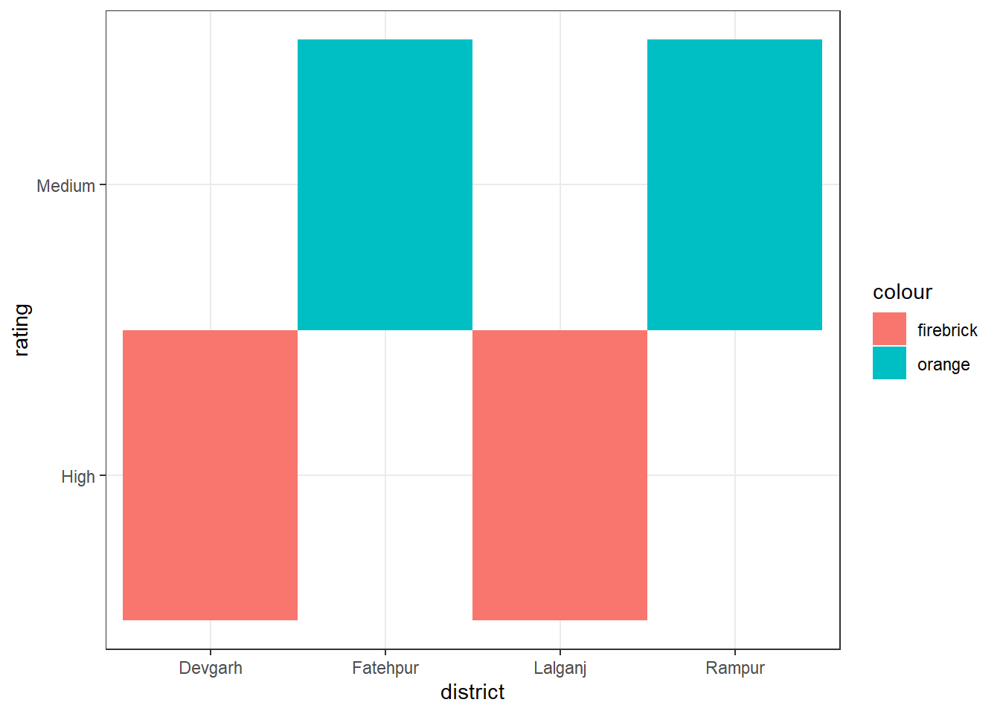
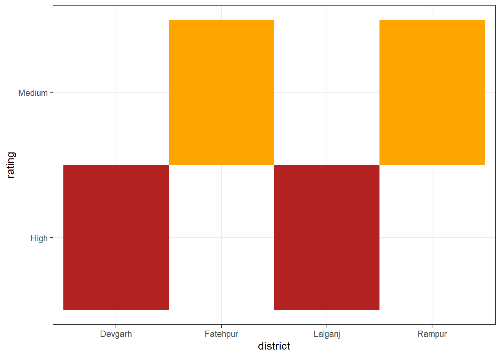
In the first chart, ggplot2 treats the colour names as ordinary categories and picks its own colours. In the second, scale_fill_identity() uses the colours as they are, and draws no legend.
23.1.4 Other scale aesthetics
Other aesthetics have their own scale functions, named in the same way. For example, to take the shapes from the data, we have scale_shape_identity(). To choose the shapes ourselves, we have scale_shape_manual(), which takes a named vector. Readers may explore these functions through their help pages.
23.2 Coordinate systems
The default coordinate system of ggplot2 is Cartesian, with the x and y positions. It uses the function coord_cartesian() with its default values. Two other linear systems are coord_flip(), which swaps the x and y axes, and coord_fixed(), which keeps a fixed ratio between the units of the two axes.
coord_cartesian() has the arguments xlim and ylim, which set the visible range of the axes. Unlike the limits argument of a scale_*_*() function, they do not throw away the data outside the range. They only zoom in. Let us see this on the scatter plot of expenditure against vouchers, with a trend line. In Figure 23.10, scale_x_continuous() has changed the shape of the smooth curve, because it threw away the data outside its limits. coord_cartesian() kept the curve unchanged.
base <- ggplot(spend, aes(vouchers, exp / 1e5)) +
geom_point() +
geom_smooth()
# Full dataset
base
# Scaling to 2--6 throws away data outside that range
base + scale_x_continuous(limits = c(2, 6))
# Zooming to 2--6 keeps all the data but only shows some of it
base + coord_cartesian(xlim = c(2, 6))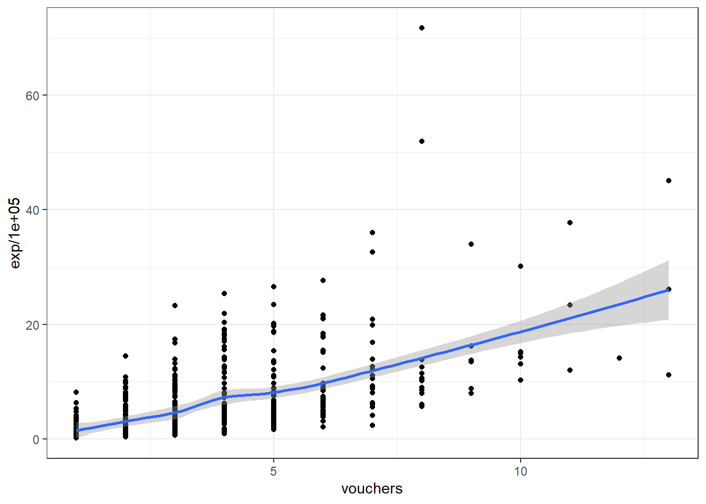
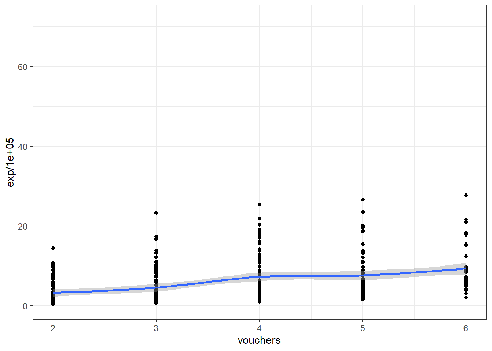
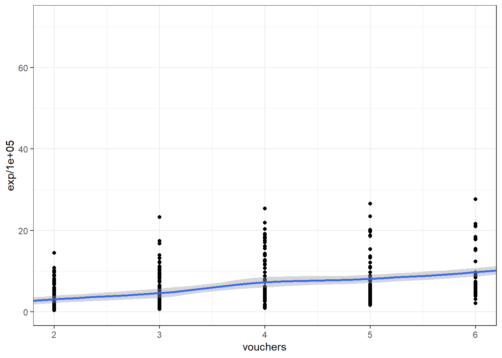
Setting limits in a scale removes the rows outside the limits before any stat is computed. A trend line, a box plot or a mean drawn on the chart then changes quietly. ggplot2 gives only a warning about removed rows. To zoom in on part of a chart, use coord_cartesian() instead.
coord_flip() swaps the axes. Note that the x axis is then drawn vertically. So any geom that takes an x value will place it along the vertical axis, not the horizontal one.
There are other coordinate systems in ggplot2. They are listed in Table 23.2.
| Entry | Title |
|---|---|
| coord_cartesian | Cartesian coordinates |
| coord_fixed | Cartesian coordinates with fixed “aspect ratio” |
| coord_equal | Cartesian coordinates with fixed “aspect ratio” |
| coord_flip | Cartesian coordinates with x and y flipped |
| coord_map | Map projections |
| coord_quickmap | Map projections |
| coord_munch | Munch coordinates data |
| coord_polar | Polar coordinates |
| coord_radial | Polar coordinates |
| coord_transform | Transformed Cartesian coordinate system |
| coord_trans | Transformed Cartesian coordinate system |
| coord_sf | Visualise sf objects |
Some of these are important for understanding how ggplot2 works. For example, did you know that a pie chart is simply a bar chart drawn in a polar coordinate system? Let us see how, with the polar and the newer radial coordinate systems.
In the following code, we draw a single stacked bar of the bills by category. We then turn it into a pie chart with coord_polar(). Setting the theta argument to "y" turns it into a bulls-eye chart instead. See the three charts in Figure 23.11.
base <- ggplot(bills, aes(y = factor(1), fill = category)) +
geom_bar(width = 1) +
scale_y_discrete(name = NULL,
guide = "none",
expand = c(0, 0)) +
scale_fill_discrete(guide = "none")
# Stacked barchart
base
# Pie chart
base + coord_polar()
# The bullseye chart
base + coord_polar(theta = "y")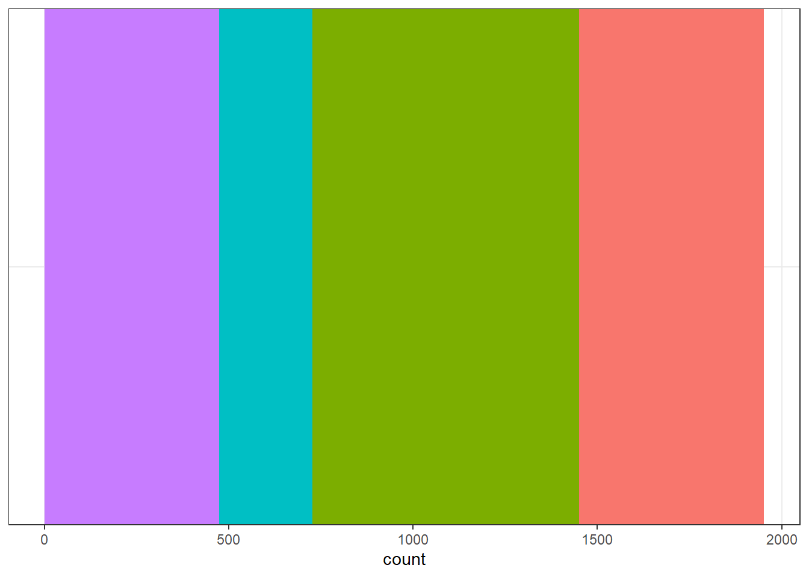
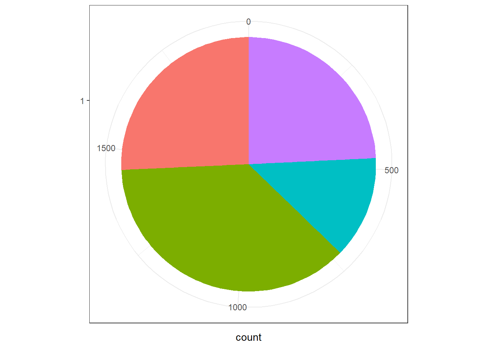
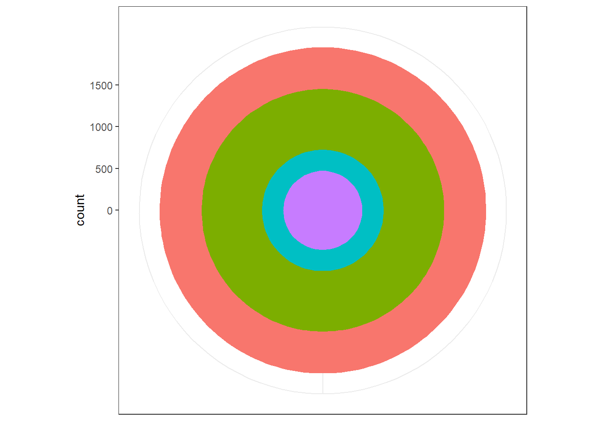
The newer coord_radial() can also turn the same stacked bar into a pie chart (Figure 23.12).
# With default value
base + coord_radial()
# Without expansion
base + coord_radial(expand = FALSE)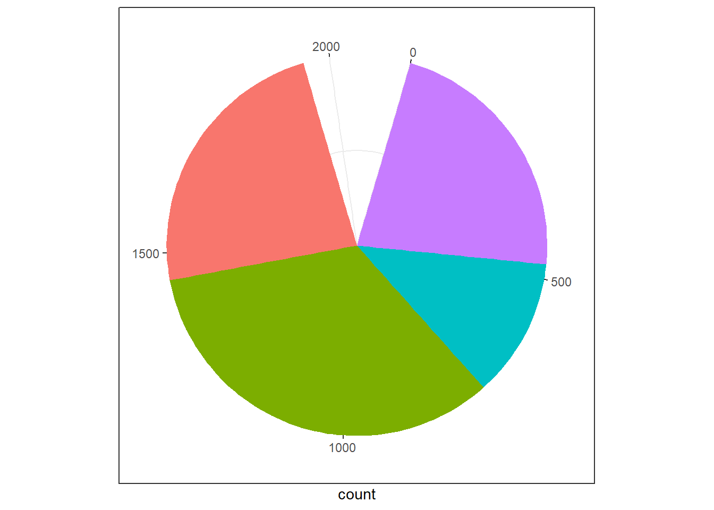
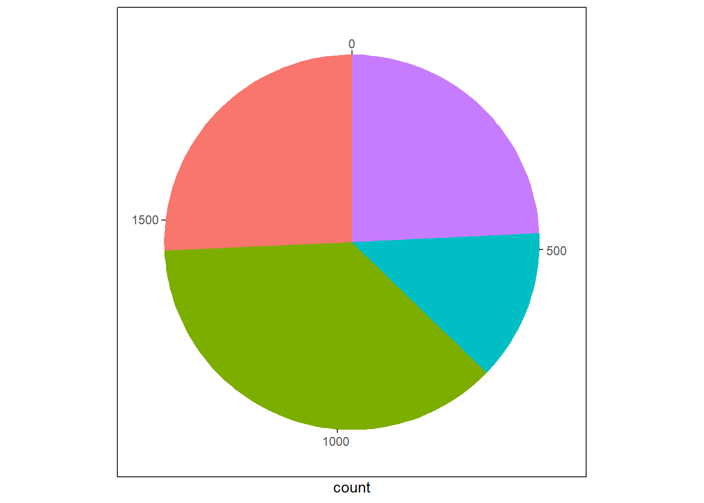
coord_radial() also makes donut charts easily, through its argument inner.radius. See Figure 23.13.
# Donut Chart
base + coord_radial(expand = FALSE,
inner.radius = 0.5)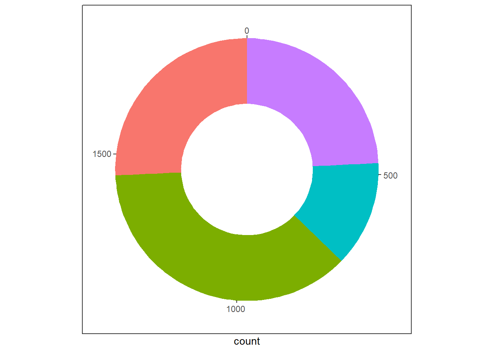
coord_radial() also keeps the labels in place when the inner radius changes. In Figure 23.14 we count the bills in each category, and label each slice with its count.
base2 <- bills |>
count(category) |>
ggplot(aes(y = n, x = "", fill = category)) +
geom_col() +
geom_text(aes(label = n),
position = position_stack(vjust = 0.5))
base2 + coord_polar(theta = "y")
base2 +
coord_radial(expand = FALSE,
theta = "y",
inner.radius = 0.5)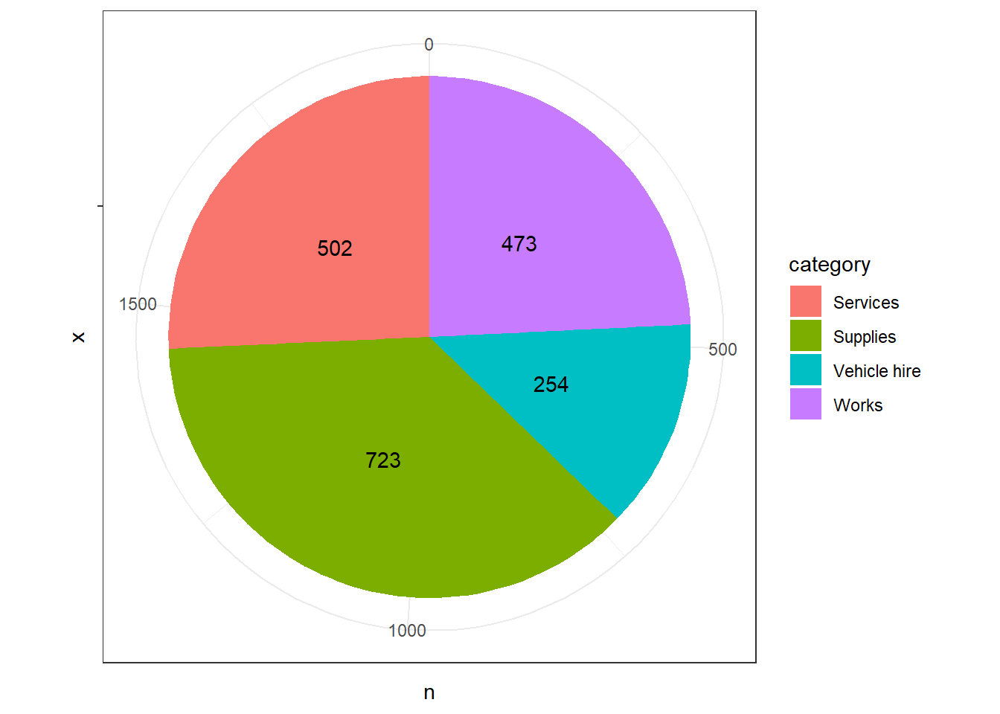
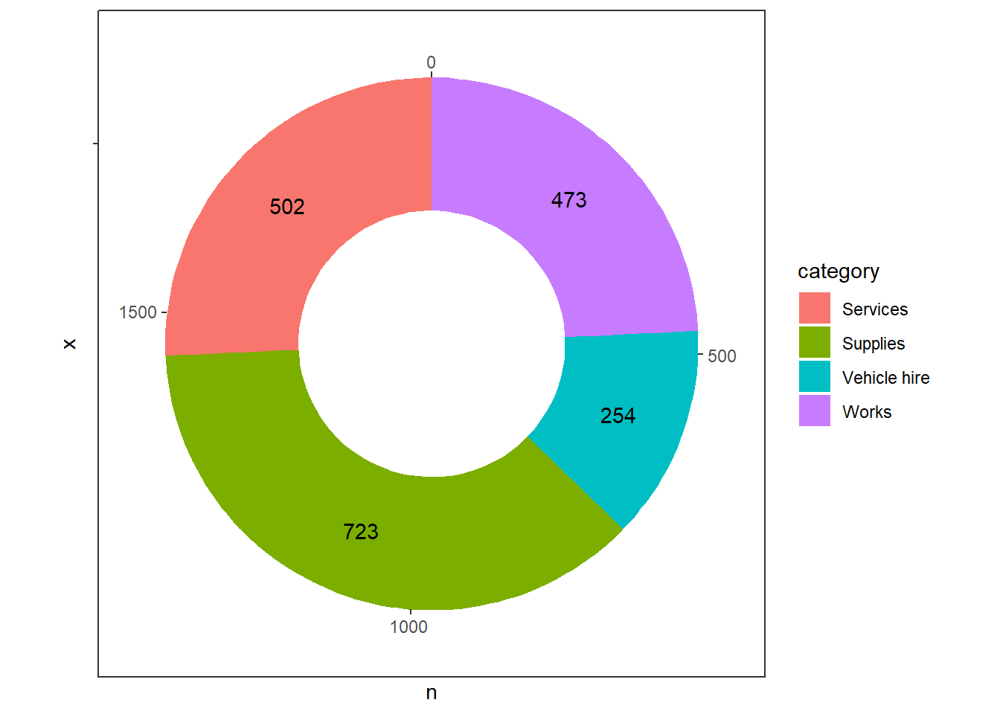
Pie and donut charts are popular, but people compare angles and areas poorly. With more than three or four slices, a sorted bar chart is almost always easier to read. Use a pie chart only to show a few shares of one whole.
coord_radial() can do much more. One last example draws a bar chart in a circle (Figure 23.15). Each bar is a district, and its height is the expenditure of the year in crore. The bars are coloured by division.
spend |>
summarise(exp_crore = round(sum(exp) / 1e7, 1), .by = c(district, division)) |>
ggplot(aes(seq_along(exp_crore), exp_crore, fill = division)) +
geom_col(width = 1,
colour = "white") +
geom_text(aes(y = 5, label = district),
angle = 90,
hjust = 1) +
geom_text(
aes(y = 5, label = exp_crore),
angle = 90,
hjust = -1,
fontface = "bold"
) +
coord_radial(rotate.angle = TRUE, expand = FALSE) +
scale_fill_manual(values = c("dodgerblue", "seagreen", "orange", "orchid"),
guide = "none") +
theme_void() +
theme(panel.background = element_rect(fill = "aliceblue")) +
ggtitle("Expenditure of districts, 2024-25 (₹ crore)") +
theme(plot.title = element_text(size = 15,
face = "bold", hjust = 0.5))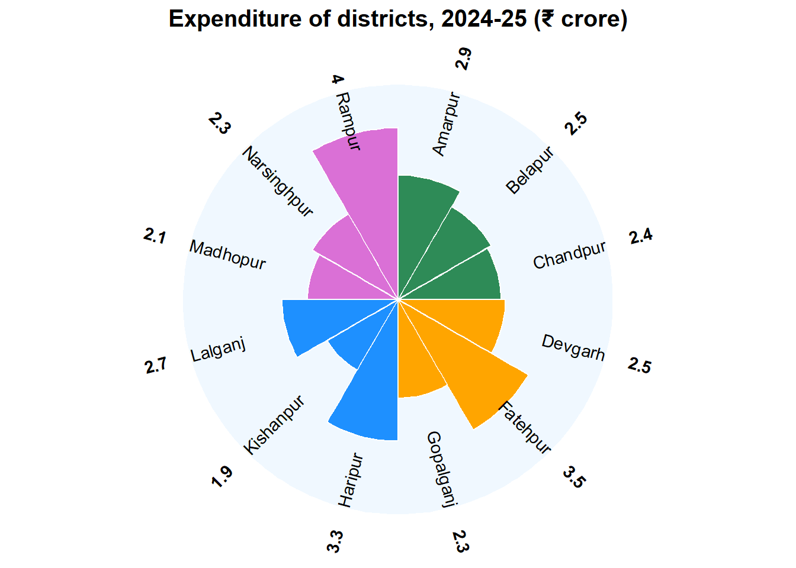
23.3 Faceting
When there is a lot of data, it can be hard to tell the groups apart in one chart, even with colours and shapes. Another way is faceting. Facets, or small multiples, split one chart into many panels, one for each group of data. The same chart is drawn many times, each time for one part of the data.
In ggplot2 there are two functions for faceting.
-
facet_wrap()makes one panel for each value of a single variable. It wraps the panels into rows, like words in a paragraph. We may set the number of columns with the argumentncol. -
facet_grid()makes a grid of panels, with the values of one variable as rows and those of another as columns.
Both functions have a scales argument. With scales = "free", each panel gets its own axis range, instead of a common one.
Let us see an example. In Figure 23.16 we use facet_wrap() to draw the monthly expenditure of each district in its own panel. The variable for the panels is given after the ~ sign. facet_wrap(~ district) makes one panel for each district.
spend |>
summarise(exp_lakh = sum(exp) / 1e5, .by = c(district, month)) |>
ggplot(aes(x = as.integer(month), y = exp_lakh)) +
geom_col() +
facet_wrap(~ district, ncol = 3) +
scale_x_continuous(breaks = c(1, 4, 7, 10)) +
labs(x = "Month of the financial year (1 = April)")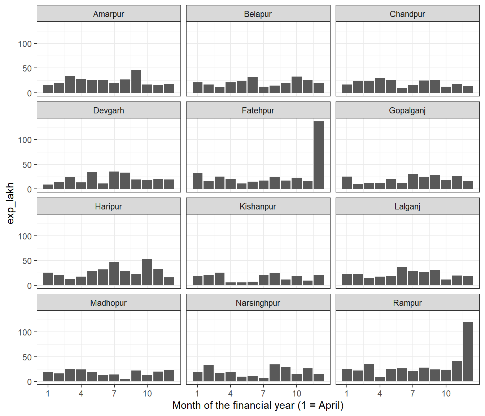
With all panels on the same scale, the tall March bars of Fatehpur and Rampur jump out of Figure 23.16. The other ten panels look alike. We placed the breaks of the x axis at the first month of each quarter, with scale_x_continuous(breaks = c(1, 4, 7, 10)).
facet_grid(), on the other hand, places the panels in a grid, with a different variable on each side. For example, facet_grid(variable1 ~ variable2) makes a grid with the values of variable1 as rows and those of variable2 as columns. This is useful to compare a pattern across the combinations of two variables. In Figure 23.17 the rows are the categories of bills and the columns are the divisions. Each panel has one line for each district of the division.
ggplot(spend, aes(x = as.integer(month), y = exp / 1e5, group = district)) +
geom_line() +
facet_grid(category ~ division, scales = "free_y") +
scale_x_continuous(breaks = c(1, 4, 7, 10)) +
labs(x = "Month of the financial year (1 = April)", y = "Expenditure (₹ lakh)")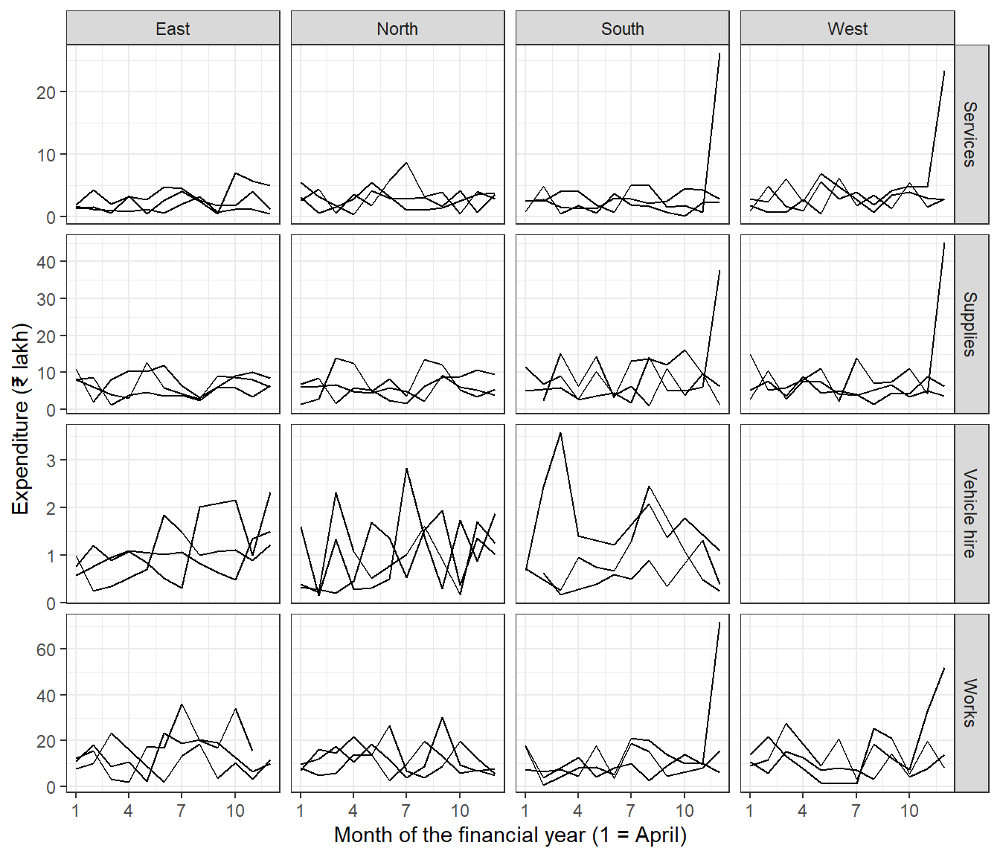
Here we used scales = "free_y", so that each row of panels has its own y axis. The small vehicle hire bills would otherwise look flat beside the large works bills. Notice also that the West column has no vehicle hire lines at all. Facets show such gaps clearly.
23.4 Labelling and annotating charts
Labels give a chart its context. Titles, axis titles, legends and notes tell the reader what is shown and what to look at. Good labels make a chart clear and easy to use, and give it more value.
23.4.1 Annotations
In Section 22.5 we used geoms like geom_text(), geom_label(), geom_vline() and geom_abline() to label or mark a chart. A few other geoms are also used to annotate charts.
-
geom_rect()draws a rectangle in the plot area, using the aestheticsxmin,xmax,yminandymax. -
geom_segment()draws a line segment.
There is also a helper function, annotate(). It adds a geom to a chart, but its values are not taken from the columns of a data frame. They are given directly, as single values or short vectors. This is handy for a few notes, such as a label or an arrow. See the example in Figure 23.18, where we add five notes to the monthly total of the scheme. These are (i) a shaded rectangle, (ii) two pieces of text and (iii) two arrows.
ggplot(monthly_total, aes(month_start, exp_crore)) +
annotate(
geom = "rect",
xmin = ymd("20250215"),
xmax = ymd("20250315"),
ymin = -Inf,
ymax = Inf,
fill = "orange",
alpha = 0.5
) +
annotate(
geom = "label",
x = ymd("20241201"),
y = 3.9,
label = "Year-end spending",
hjust = 1
) +
annotate(
geom = "curve",
x = ymd("20241205"),
y = 3.9,
xend = ymd("20250210"),
yend = 4.1,
curvature = -0.3,
arrow = arrow(length = unit(0.3, "cm"))
) +
annotate(
geom = "text",
x = ymd("20240601"),
y = 3.4,
label = "Steady months",
hjust = 0,
fontface = "bold.italic"
) +
annotate(
geom = "curve",
x = ymd("20240710"),
y = 3.3,
xend = ymd("20240801"),
yend = 2.8,
curvature = 0.3,
arrow = arrow(length = unit(0.3, "cm"))
) +
geom_line(colour = "indianred4")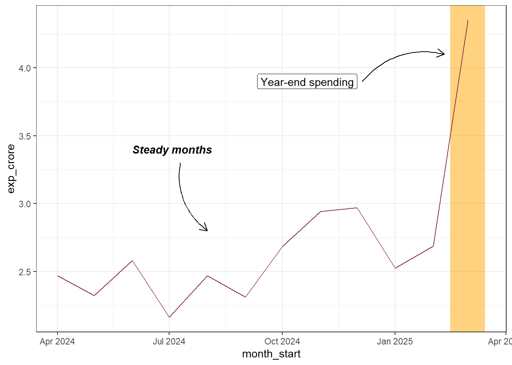
The positions of these notes were chosen by looking at the chart. If the data changes, they may need to be moved.
23.4.2 Labels
Good labels make a chart easy to understand for every reader. Use full, readable names for the axes and the legends, not column names. Use the title and the subtitle to state the main point of the chart. Use the caption for the source of the data. A tag marks the chart with a number, which helps when a report has many charts.
There are several ways to add labels in ggplot2. We will use the function labs(), which sets the title, subtitle, axis titles, legend titles, caption and tag in one place. See Figure 23.19.
ggplot(bills, aes(x = amount / 1e5, y = days_to_pay, colour = category)) +
geom_point(alpha = 0.5) +
labs(title = "Large bills were not paid faster than small ones",
subtitle = "Except for a few works bills paid within a day",
x = "Bill amount (₹ lakh)",
y = "Days taken to pay",
colour = "Category",
caption = "Data from the bill register of the scheme, 2024-25",
tag = "Chart 1")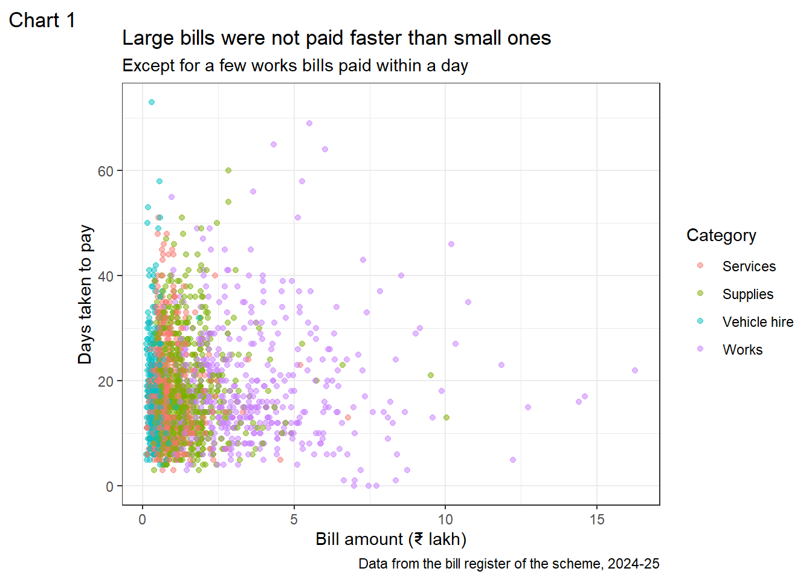
23.4.3 Labels from a dictionary, new in ggplot2 4.0
Data received from departments often has coded column names, like amt_sanc or dist_cd. From version 4.0, we can give labs() a dictionary. This is a named vector that maps column names to readable labels. Every axis and legend title is then taken from it.
dictionary <- c(amount = "Bill amount (₹)",
days_to_pay = "Days taken to pay",
category = "Category of bill")
ggplot(bills, aes(amount, days_to_pay, colour = category)) +
geom_point(alpha = 0.5) +
labs(dictionary = dictionary)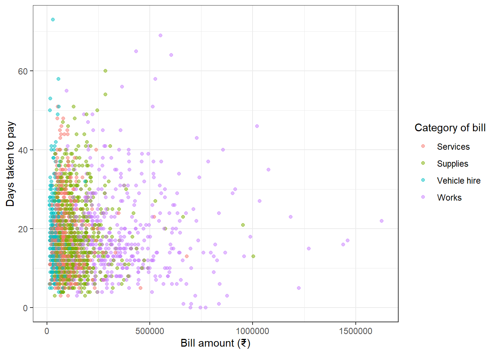
A single dictionary can be kept for a whole dataset, and used for every chart made from it.
23.5 Themes
So far, except in a few cases, we have used the standard look of ggplot2. Themes control the look of everything in a chart that is not data. This includes the background, the grid lines, the fonts, the sizes of text and the position of the legend.
ggplot2 has some complete themes, which set all these elements to values that work well together. The default theme is theme_gray(). The complete themes are listed in Table 23.3.
| Theme name | Description |
|---|---|
theme_gray() |
The signature ggplot2 theme with a grey background and white gridlines, designed to put the data forward yet make comparisons easy. |
theme_bw() |
The classic dark-on-light ggplot2 theme. May work better for presentations displayed with a projector. |
theme_linedraw() |
A theme with only black lines of various widths on white backgrounds, reminiscent of a line drawing. Serves a purpose similar to theme_bw(). Note that this theme has some very thin lines (\<\< 1 pt) which some journals may refuse. |
theme_light() |
A theme similar to theme_linedraw() but with light grey lines and axes, to direct more attention towards the data. |
theme_dark() |
The dark cousin of theme_light(), with similar line sizes but a dark background. Useful to make thin coloured lines pop out. |
theme_minimal() |
A minimalistic theme with no background annotations. |
theme_classic() |
A classic-looking theme, with x and y axis lines and no gridlines. |
theme_void() |
A completely empty theme. |
theme_test() |
A theme for visual unit tests. It should ideally never change except for new features. |
Figure 23.21 shows the same chart in four of these themes.
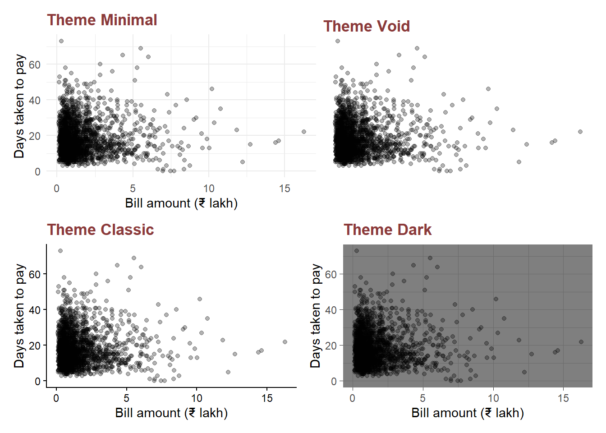
We can also change single elements of a theme, with the function theme(). Each argument of theme() is the name of an element, such as plot.title or axis.text.x. The new value is usually given through an element function, such as element_text(), element_line() or element_rect(). Figure 23.22 shows some elements that are often changed.
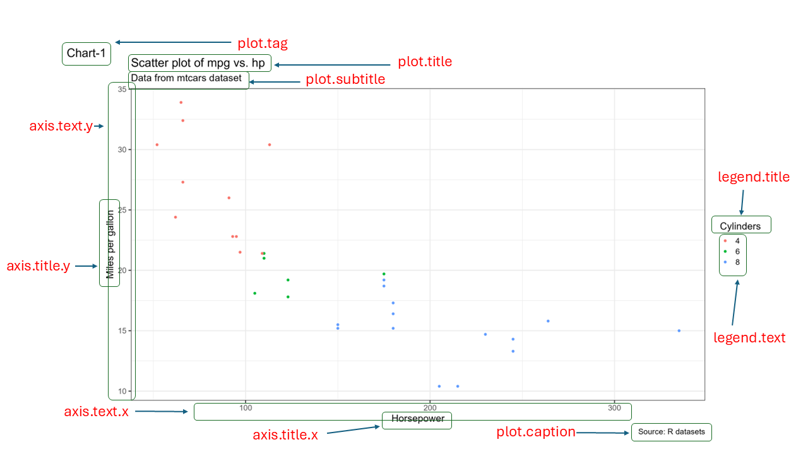
In Figure 23.23 several elements of a chart have been changed with theme().
myplot <- ggplot(bills, aes(x = amount / 1e5, y = days_to_pay)) +
geom_point(size = 2, alpha = 0.6, aes(colour = category)) +
geom_smooth(method = "lm", se = FALSE, formula = y ~ x, linewidth = 0.5) +
labs(title = "Bill amount and days taken to pay",
caption = "Data from the bill register, 2024-25",
x = "Bill amount (₹ lakh)",
y = "Days taken to pay",
colour = "Category") +
theme(
panel.background = element_rect(fill = NA),
axis.line = element_line(colour = "seagreen4",
linetype = "solid"),
axis.ticks = element_line(colour = "darkorchid4"),
axis.text.x = element_text(face = "bold", size = 10),
axis.text.y = element_text(face = "bold", size = 10),
axis.title = element_text(face = "bold", size = 12),
plot.title = element_text(face = "bold", hjust = 0.5, size = 18),
plot.caption = element_text(face = "italic", size = 12),
legend.title = element_text(face = "bold.italic", size = 12),
legend.text = element_text(size = 12),
legend.position = "inside",
legend.position.inside = c(1, 1),
legend.justification = c(1, 1),
legend.background = element_rect(linewidth = 1, fill = "white", colour = "grey")
)
myplot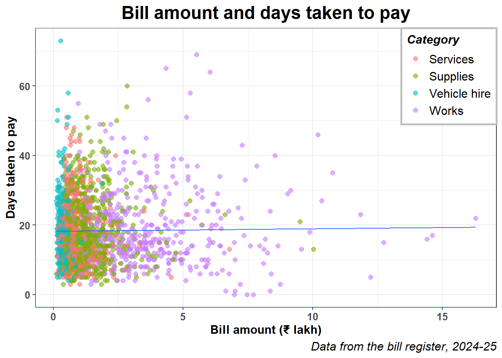
Notice two settings for the legend. legend.position = "inside" places the legend inside the plot area. legend.position.inside = c(1, 1) gives its position, here the top right corner. Before ggplot2 version 3.5, a pair of numbers was given directly to legend.position.
We can combine several such settings into a theme of our own, and apply it to all charts with theme_set(). This gives all the charts of an audit report the same look.
23.5.1 Ink and paper, new in ggplot2 4.0
From version 4.0, the complete themes have three arguments that change the whole look at once. ink is the colour of the foreground, such as text, lines and points. paper is the colour of the background. accent is the colour used for highlights, such as the line of geom_smooth().
ggplot(spend, aes(vouchers, exp / 1e5)) +
geom_point() +
geom_smooth(method = "lm", formula = y ~ x) +
theme_bw(ink = "navy", paper = "ivory", accent = "firebrick")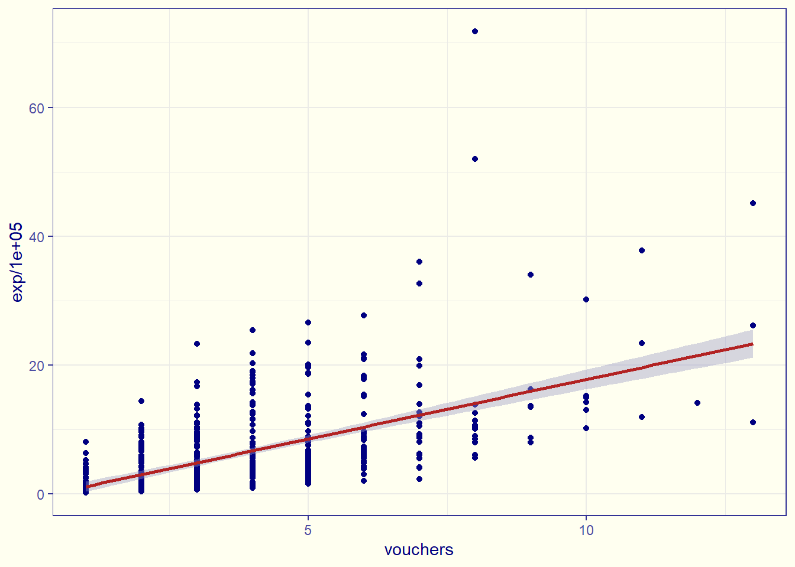
One line gives a consistent house style, without changing a dozen theme elements one by one.
23.6 Audit use case, bills just below the limit
A district officer may pass a bill of up to ₹2 lakh. A larger purchase needs the sanction of a higher authority, and often a tender. An officer who wants to avoid this may split one large purchase into several bills, each just below ₹2 lakh. This is called splitting of bills or splitting of sanctions. In Figure 22.39 we saw a hint of it. Let us now examine it properly.
First, let us look closely at the bills between ₹1.5 lakh and ₹2.5 lakh. Bins of ₹5,000 end exactly at the limit, through boundary. Amounts are shown in lakh.
near_limit <- bills |>
filter(between(amount, 150000, 250000))
ggplot(near_limit, aes(amount)) +
geom_histogram(binwidth = 5000, boundary = 200000,
fill = "grey60", colour = "white") +
geom_vline(xintercept = 200000, linetype = "dashed", colour = "firebrick") +
scale_x_continuous(labels = scales::label_number(scale = 1e-5, accuracy = 0.1,
suffix = " lakh")) +
labs(x = "Bill amount", y = "Number of bills",
title = "Bills pile up just below the limit of ₹2 lakh")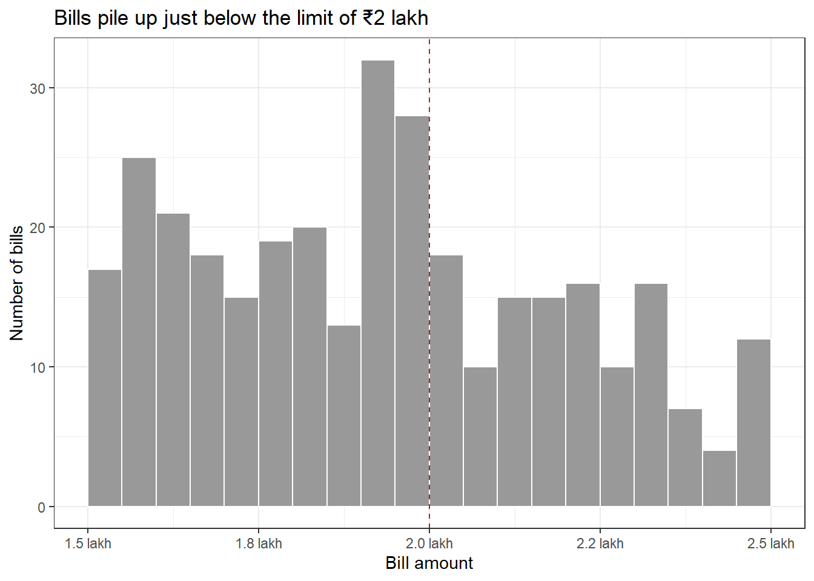
In Figure 23.25 the two bars just left of the dashed line are far taller than the rest. There are 60 bills between ₹1.9 lakh and ₹2 lakh, but only 28 between ₹2 lakh and ₹2.1 lakh. In a natural set of bills, the counts on the two sides of the line should be similar.
Who raised these bills? Let us count them by district and vendor.
# A tibble: 5 × 3
district vendor n
<chr> <chr> <int>
1 Devgarh Shubham Enterprises 28
2 Narsinghpur Om Sai Traders 3
3 Chandpur Patel Hardware 2
4 Lalganj Patel Hardware 2
5 Rampur Bharat Stationers 2One pair stands far above the rest. Devgarh paid 28 bills just below the limit to Shubham Enterprises. Let us draw the same histogram again, now with the bills of this district in colour. We stack the colours with fill, and choose them with scale_fill_manual().
near_limit |>
mutate(devgarh = if_else(district == "Devgarh", "Devgarh", "Other districts")) |>
ggplot(aes(amount, fill = devgarh)) +
geom_histogram(binwidth = 5000, boundary = 200000, colour = "white") +
geom_vline(xintercept = 200000, linetype = "dashed") +
scale_x_continuous(labels = scales::label_number(scale = 1e-5, accuracy = 0.1,
suffix = " lakh")) +
scale_fill_manual(values = c(Devgarh = "firebrick", `Other districts` = "grey70")) +
labs(x = "Bill amount", y = "Number of bills", fill = NULL,
title = "The pile below ₹2 lakh comes almost entirely from Devgarh") +
theme(legend.position = "top")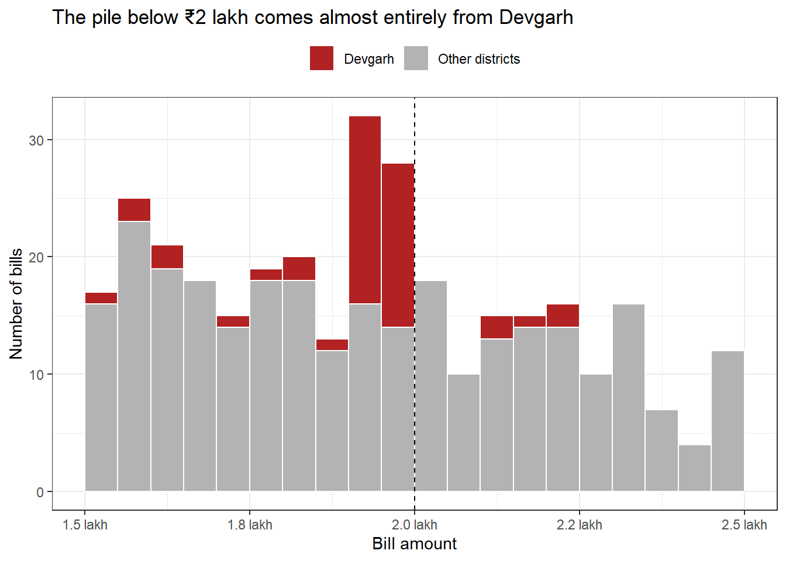
Figure 23.26 makes the point at once. Without Devgarh, the bars on the two sides of the limit would be of similar height. The 28 bills of Shubham Enterprises add up to ₹54.4 lakh. Together they are far above the officer’s limit of ₹2 lakh.
What should the auditor do next?
- Call for the files of these 28 bills. Check whether they were for the same item, ordered around the same time.
- Check whether a single requirement existed that should have been sanctioned by the higher authority, and procured by tender.
- Compare the rates paid with the market rates, or with rates paid by other districts.
- Record the chart, the list of bills and the replies of the district in the working papers.
23.7 Audit use case, a chart for the audit report
Let us put several features together, in the kind of chart that appears in audit reports. For each of the 12 districts, we have the budget estimate and the expenditure of the year. We want to show the utilisation, that is, the expenditure as a percentage of the budget. We want the districts sorted, the amounts in lakh, and the districts that spent more than their budget highlighted. The table budget_vs_exp, made for Figure 22.53 and rebuilt at the start of this chapter, has what we need.
budget_vs_exp |>
mutate(utilisation = amt_exp / amt_be,
excess = utilisation > 1,
district = fct_reorder(district, utilisation)) |>
ggplot(aes(utilisation, district, fill = excess)) +
geom_col() +
geom_vline(xintercept = 1, linetype = "dashed") +
geom_text(aes(label = scales::label_number(scale = 1e-5, accuracy = 1, big.mark = ",",
suffix = " lakh")(amt_exp)),
hjust = -0.1, size = 3) +
scale_x_continuous(labels = scales::label_percent(),
expand = expansion(mult = c(0, 0.25))) +
scale_fill_manual(values = c(`FALSE` = "grey60", `TRUE` = "firebrick"),
labels = c("Within budget", "Exceeded budget")) +
labs(title = "Utilisation of funds, 2024-25",
subtitle = "Expenditure as a percentage of the budget estimate",
x = NULL, y = NULL, fill = NULL,
caption = "Labels show the expenditure. The dashed line marks 100%.") +
theme(legend.position = "top")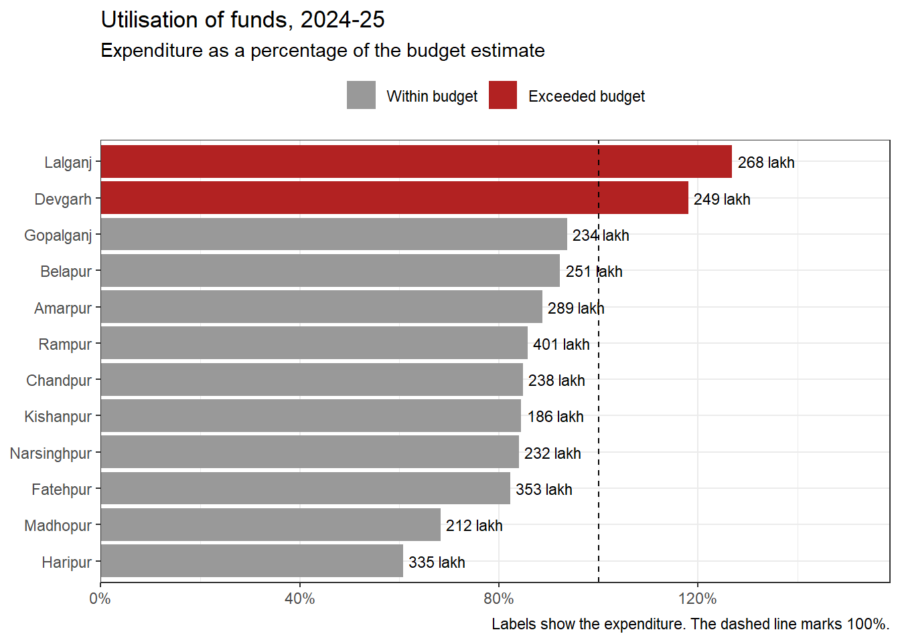
Each choice in this chart serves the reader.
- The districts are sorted by utilisation with
fct_reorder(), so the order itself tells the story. - Only the districts that exceeded their budget are in colour. Everything else is grey, so the eye goes straight to them.
- The dashed line at 100% gives a reference. The reader does not have to judge the lengths of the bars.
- The labels show the expenditure in lakh, the unit used in Indian government reports, with
scales::label_number(scale = 1e-5, suffix = " lakh"). - The title says what is shown, and the caption explains the marks.
Figure 23.27 shows that Lalganj spent 127% of its budget, an excess of ₹56.7 lakh. Devgarh spent 118%, an excess of ₹38.1 lakh. The next steps for the auditor are to check whether the excess was covered by a re-appropriation or a supplementary grant, and whether it was regularised. Notice also that these are the same two districts flagged earlier. In Section 22.5, Lalganj paid large bills within a day. In Section 23.6, Devgarh split its bills. A chart that brings several findings together is strong evidence for the report.
A chart in an audit report should make one point clearly. Decide the point first, then remove everything that does not serve it. Use colour for emphasis, not for decoration. Always show the reference, like the budget, the norm or the average, against which the reader should judge.
23.8 Saving and exporting plots
After making a chart, we usually want to save it for a report or a presentation. There are many ways to save a chart. We will look at three of them.
Saving through code
We may also save a chart with the function ggsave(). Its syntax is simple.
ggsave(
filename,
plot = last_plot(),
device = NULL,
path = NULL,
scale = 1,
width = NA,
height = NA,
units = c("in", "cm", "mm", "px"),
dpi = 300,
limitsize = TRUE,
bg = NULL,
...
)The arguments are easy to understand. For example, to save the chart we made in Figure 23.23, which we stored as myplot, we may write the following.
ggsave("bill_amount_days.png", myplot, height = 8, width = 10)The type of file is taken from the extension of the file name, here .png. Giving the same width and height to every chart keeps the charts of a report alike.
Prefer saving charts with code over the menu. The script then records exactly how each chart in the report was made. Keep it with your working papers, so that a reviewer can draw the same chart again from the same data.
Graphics devices (base R plots)
Charts made outside ggplot2, with plot(), hist(), boxplot() and other base R functions, cannot be saved with ggsave(). It works only for charts made with ggplot2.
Base R saves such charts through its graphics device functions. There are three steps.
- Open a file of the chosen type, giving its size, resolution and units.
- Draw the chart, in base R or ggplot2, or both.
- Close the file with
dev.off(). Until we do this, every chart drawn goes into the same file. So we can put many charts into one PDF before closing it.
Here is an example.
# Creates a png file
png(
filename = "scatter.png",
width = 5,
height = 3,
units = "in",
res = 300
)
# Prints a ggplot2 chart in it
ggplot(bills, aes(x = amount, y = days_to_pay)) +
geom_point(alpha = 0.3) +
geom_vline(xintercept = 2e5,
colour = "seagreen")
# Device is off
dev.off()png
2 # Creates a new PDF file
pdf(file = "two_page.pdf",
width = 6,
height = 4)
# First plot, in base R
plot(bills$amount, bills$days_to_pay)
abline(v = 2e5, col = "red")
# Second plot, in ggplot2
ggplot(bills, aes(x = amount, y = days_to_pay)) +
geom_point(alpha = 0.3) +
geom_vline(xintercept = 2e5,
colour = "seagreen")
# Device Off
dev.off()png
2 23.9 A suggested workflow
- Start from a chart that finds the point. Build it as in Chapter 22, with the geom that suits the point and a reference line.
-
Format the numbers. Show amounts in lakh or crore and shares as percentages, with the label functions of
scales. -
Look closer. Use facets to compare districts, divisions or categories side by side. To zoom in, use
coord_cartesian()rather thanlimits, so that no data is dropped. -
Sort and highlight. Order the bars with
fct_reorder(), so the order itself tells the story. Keep most of the chart grey, and use colour fromscale_fill_manual()only for the cases that need attention. -
Label the chart. Give a title that states the point, readable axis titles, and the data source in the caption, all with
labs(). Set one theme for all charts of the report withtheme_set(). -
Save at a fixed size. Save each chart with
ggsave(), giving the width and height, so that all charts in the report look alike. Keep the script with the working papers.
A chart in an audit report should make one point clearly. Use colour for emphasis, not for decoration, and always show the reference against which the reader should judge. Setting limits in a scale throws away the data outside them, which can quietly change a trend line or a summary. A pattern in a chart is a lead, not a finding. Confirm it from the records before reporting it.
23.10 Where next
Our charts group the data by districts, categories and months. In R, such groups are best kept as factors. In Chapter 24 we learn to create factors, set the order of their levels and sort the bars of a chart, a task we met here with fct_reorder().
23.11 Summary of functions used
| Function | Package | What it does |
|---|---|---|
scale_x_continuous(), scale_x_log10(), scale_x_date(), scale_x_discrete() and others |
ggplot2 | Control the axes (name, breaks, labels, limits, transform) |
expansion(), sec_axis()
|
ggplot2 | Space at the ends of an axis, and a secondary axis |
scale_fill_gradient(), scale_fill_gradient2(), scale_fill_gradientn()
|
ggplot2 | Colour gradients for continuous variables |
scale_fill_manual(), scale_fill_identity(), scale_shape_identity()
|
ggplot2 | Colours or shapes chosen by us, or taken from the data |
label_percent(), label_comma(), label_number(), label_currency()
|
scales | Format axis and data labels |
coord_cartesian(), coord_flip(), coord_polar(), coord_radial()
|
ggplot2 | Coordinate systems, zooming, and pie or donut charts |
facet_wrap(), facet_grid()
|
ggplot2 | Small multiples, one panel per group |
annotate(), geom_rect(), geom_segment()
|
ggplot2 | One-off notes, rectangles and segments |
geom_histogram() with boundary
|
ggplot2 | A histogram whose bins end exactly at a limit |
labs(), ggtitle()
|
ggplot2 | Titles, axis labels, caption and tag, or a label dictionary |
theme_bw() and other complete themes, theme(), theme_set()
|
ggplot2 | Overall look, individual elements, and a default theme |
element_text(), element_line(), element_rect()
|
ggplot2 | Set the look of a theme element |
fct_reorder() |
forcats | Sort the bars of a chart by a value |
ggsave(), png(), pdf(), dev.off()
|
ggplot2, base R | Save plots to files |